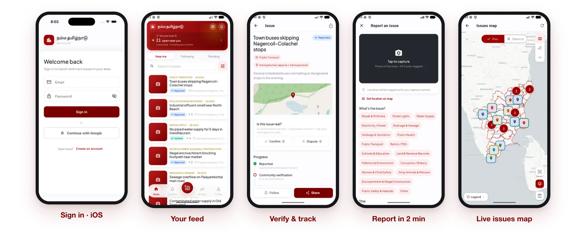

NammaTN / Civic technology
A public record of local issues
I built NammaTN so residents of Tamil Nadu can report an issue and see what their neighbours have confirmed. The site is available in Tamil and English.
Live independent civic site
Visit NammaTN ↗
The story
Why I built it.
I built NammaTN to give residents a public record they could return to after reporting a local issue. The report carries a place and supporting evidence, and the people nearby can confirm what they’ve seen. If the reporter later marks the problem fixed, neighbours can check that too. I put the site online before a formal public launch. Some residents found it on their own and submitted issues. The site also makes public information about government and services available to explore alongside the issue board. The reports stay on NammaTN as a public record.
The problem
Residents of Tamil Nadu who want to report or follow local civic issues.
A report needs a location and evidence for other residents to check it. People also need a place to see what’s changed since the report was filed.
How it works
One connected workflow.
- 01File a reportDescribe the issue, mark its location and add supporting evidence.
- 02Verify the reportNeighbours can confirm what has been reported.
- 03Follow the recordReturn to see updates and whether neighbours have confirmed a reported fix.
Engineering workflow · a simplified view of the product, not a screen mockup.
Engineering decisions
What matters beneath the interface.
I built the site in Angular with a Go backend and PostGIS for location data. It keeps the report tied to its location, identifies the relevant authority for reference and gives neighbours a way to confirm the issue or a reported fix.
NammaTN is an independent civic site. Reports are kept for public tracking and aren’t sent to government offices.
My contribution
From product to implementation.
I built NammaTN and maintain the site and its backend.
- Tamil and English interface
- Public issue tracking
- Authority identified for public reference
Angular · Go · PostgreSQL · PostGIS · D3 Geo · Docker